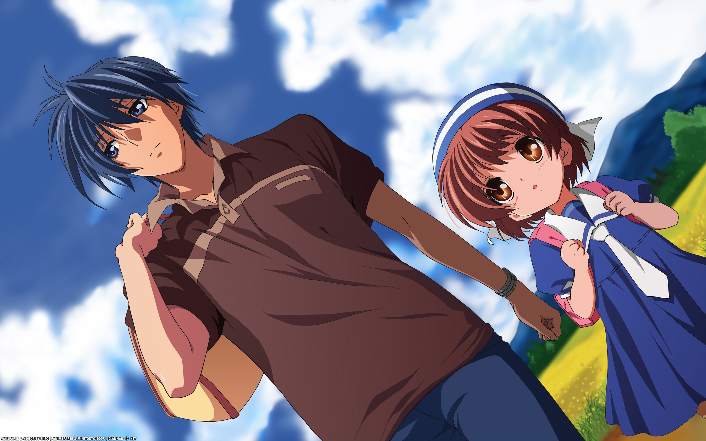
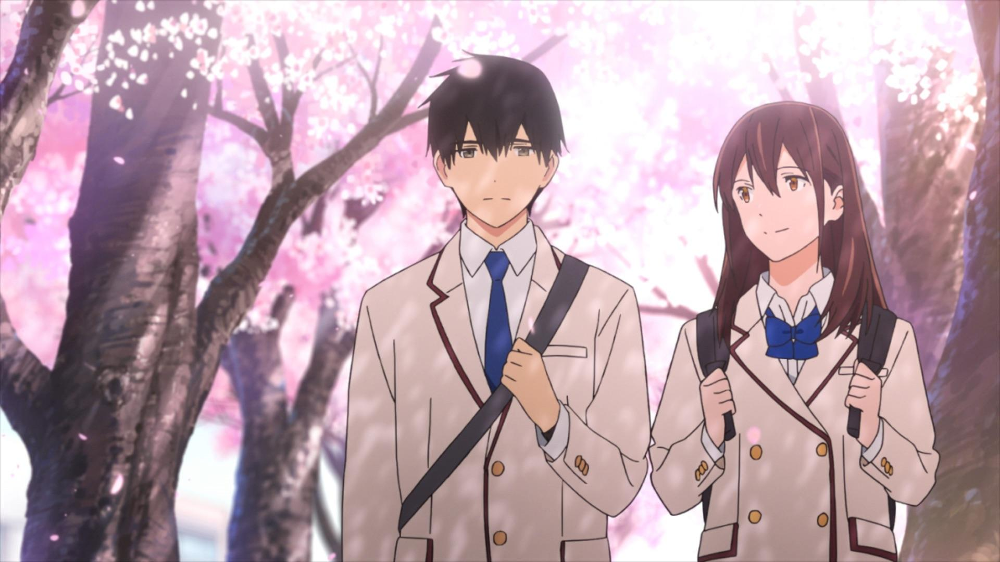
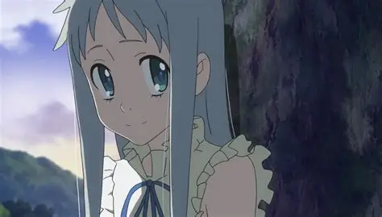
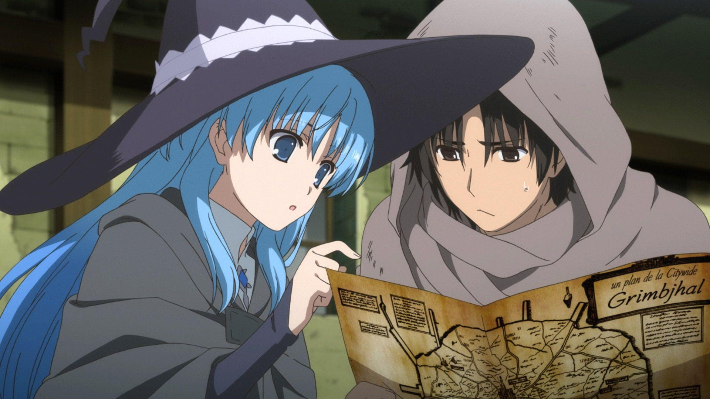
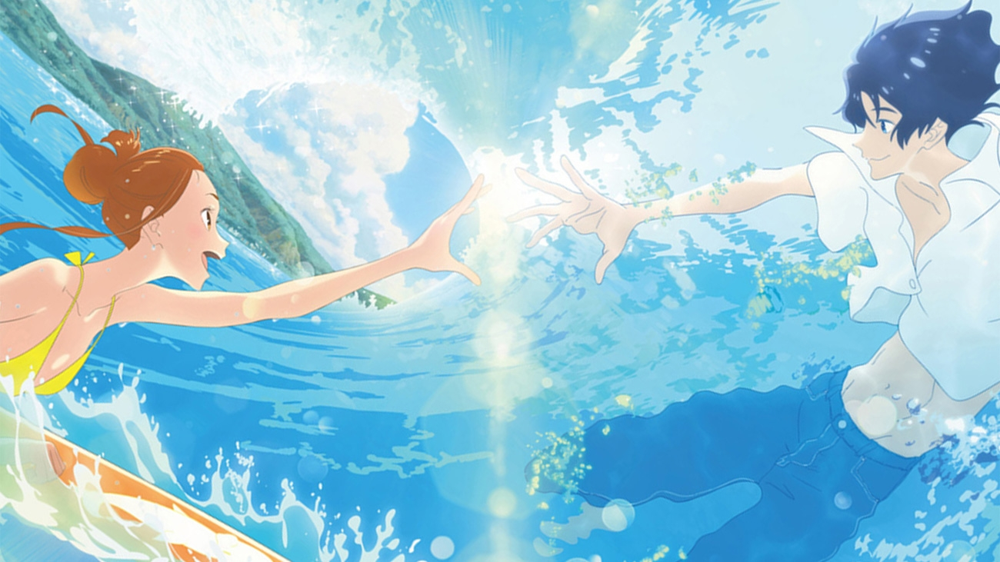
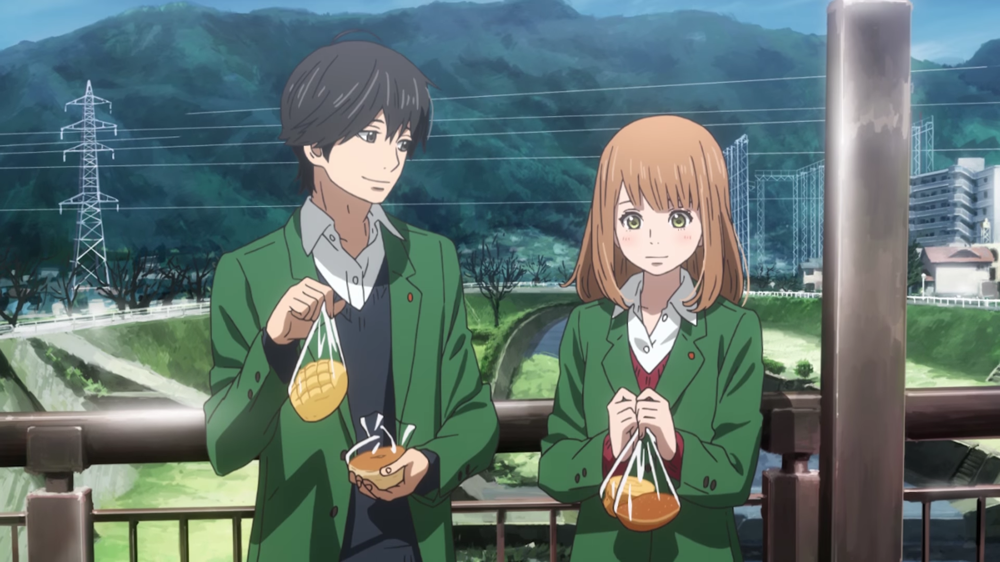
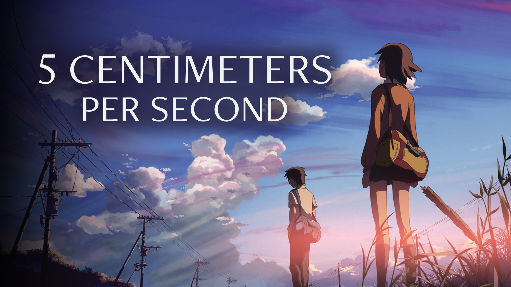

SMASH Senpai
Top 10 Romance Anime That Will Absolutely Break Your Heart
Romance anime aren’t always about happy endings. Sometimes love is painful, unfair, and destined to fall apart no matter how hard the characters try.
These are stories where feelings run deep, but timing is cruel. Where love exists, yet happiness never fully arrives. Every smile feels temporary, and every confession carries the weight of inevitable loss.
What makes these anime truly heartbreaking isn’t just death or separation — it’s watching characters fall in love knowing something is going to tear them apart. Distance. Circumstance. Fate.
Some of these romances hurt quietly, dragging out the pain until it becomes unbearable. Others strike suddenly, leaving characters — and viewers — emotionally shattered in a single moment.
These are the Top 10 Sad Romance Anime — love stories so emotional and devastating that they stay with you long after the final episode ends.
Sponsored
#1 Your Lie in April

Your Lie in April is widely considered one of the most heartbreaking romance anime ever made, not because it relies on shock, but because it slowly conditions the viewer to fall in love with hope. Music becomes the language of connection, and every performance feels like a confession that words can’t express.
What makes the pain unbearable is how beautiful everything feels. The colors are bright. The characters smile. The romance grows naturally. Yet underneath every happy moment is a quiet sense of inevitability — a feeling that something precious is running out of time.
The anime doesn’t rush its emotional damage. It builds attachment through shared trauma, mutual healing, and moments of genuine warmth. By the time the sadness arrives, the viewer isn’t prepared — because the story never feels cruel, only honest.
Your Lie in April hurts because it treats love as something transformative, even when it doesn’t last. It leaves viewers questioning whether fleeting happiness is worth inevitable pain. Few anime make heartbreak feel this meaningful, and even fewer leave scars this deep.
- Episode count: 22
- Genre: Romance, Drama, Music
- Known for: Emotional devastation and unforgettable finale
- Core theme: Love can save you — even if it breaks you

play anime smash or pass here (not sponsored)
SMASH SENPAI – Smash or Pass#2 Clannad: After Story
Clannad: After Story delivers heartbreak on a level that feels almost unfair. Unlike most romance anime, it doesn’t end when the relationship begins. Instead, it follows love into adulthood, responsibility, and the crushing weight of real life.
What makes its sadness so effective is patience. The anime spends time building comfort, stability, and happiness — only to slowly dismantle everything piece by piece. Loss doesn’t arrive dramatically. It creeps in, settling into everyday routines until it becomes unbearable.
The pain in After Story isn’t about a single moment. It’s about accumulation. Missed chances. Silent suffering. Watching a character continue living while emotionally hollow. The anime forces viewers to sit with grief, rather than escape it.
Clannad: After Story stands out because it doesn’t romanticize tragedy. It shows how love can create meaning — and how losing it can erase purpose entirely. For many viewers, this anime isn’t just sad. It’s life-altering.
- Episode count: 24
- Genre: Romance, Drama, Slice of Life
- Known for: Emotional realism and long-lasting impact
- Core theme: Love, family, and unbearable loss
Sponsored
#3 I Want to Eat Your Pancreas
I Want to Eat Your Pancreas is a romance built on borrowed time. From the beginning, the story feels quiet, intimate, and painfully fragile. The connection between the two leads grows through simple moments — conversations, shared secrets, and the slow realization of what love means.
What makes the heartbreak hit so hard is how normal everything feels. There’s no dramatic framing. No constant sadness. Just two people learning to enjoy life together, even when the future is clearly limited. The anime allows happiness to exist — which makes losing it devastating.
The emotional impact doesn’t come from excess tragedy, but from contrast. Laughter sits beside silence. Hope exists next to fear. When the pain finally arrives, it feels abrupt, unfair, and impossible to accept.
This anime lingers long after it ends. Not because it overwhelms, but because it reminds viewers how fragile connections truly are. It turns ordinary moments into memories, and memories into regret. Few romance anime hurt this quietly — and this deeply.
- Movie length: 108 minutes
- Genre: Romance, Drama
- Known for: Sudden emotional impact and lasting sadness
- Core theme: Loving someone even when time is against you
#4 Plastic Memories

Plastic Memories is a romance anime built entirely around inevitability. From the very beginning, the story makes one thing painfully clear — love here comes with an expiration date. The anime doesn’t hide this fact or soften it. Instead, it forces both the characters and the viewers to live with the countdown ticking quietly in the background.
What makes the sadness in Plastic Memories so effective is how gentle the romance feels. The relationship develops naturally, through shared routines, small smiles, and moments of genuine warmth. Nothing feels rushed or artificial. Happiness is allowed to exist — which makes every peaceful moment feel fragile.
The anime’s emotional weight comes from watching characters fall in love despite knowing how it will end. There’s no denial. No miracle solution. Just quiet acceptance mixed with desperation. The pain doesn’t explode all at once — it slowly sinks in, episode by episode, until it becomes impossible to ignore.
Plastic Memories stands out because it treats loss as unavoidable, not dramatic. Love doesn’t fail here — time does. The anime asks a devastating question: if you knew a relationship would end in heartbreak, would you still choose to love? For many viewers, the answer hurts more than the ending itself.
- Episode count: 13
- Genre: Romance, Sci-Fi, Drama
- Known for: Inevitable heartbreak and emotional restraint
- Core theme: Loving deeply even when time is limited
Sponsored
#5 Anohana: The Flower We Saw That Day
Anohana: The Flower We Saw That Day is a romance rooted in grief, memory, and the pain of growing up without closure. Unlike traditional romance anime, its heartbreak doesn’t come from a single relationship — it comes from loss that never healed.
The story follows a group of childhood friends torn apart after the death of Menma, a girl whose absence continues to shape their lives. Years later, her spirit reappears, forcing them to confront emotions they buried rather than resolved. Love here is quiet, unfinished, and tangled with guilt.
What makes Anohana devastating is how realistic its emotional pain feels. Characters avoid each other, pretend they’ve moved on, and hide behind anger or silence. Romance exists beneath the surface — unspoken feelings, missed chances, and affection that never had time to mature.
The sadness doesn’t hit all at once. It builds slowly, episode by episode, until grief becomes unavoidable. When emotions finally break free, they do so honestly and painfully — not as drama, but as release.
Anohana hurts because it reminds viewers that some love stories don’t end — they simply stop. And the weight of what was never said can last a lifetime.
- Episode count: 11
- Genre: Romance, Drama, Supernatural
- Known for: Emotional breakdown finale
- Core theme: Grief, regret, and unfinished love
#6 WorldEnd (SukaSuka)
WorldEnd, also known as SukaSuka, delivers romance wrapped in fantasy and quiet despair. Set in a world already past saving, the anime treats happiness as something temporary — a luxury characters are rarely allowed to keep. Love exists here, but it always feels borrowed.
What makes the romance so heartbreaking is how pure and sincere it feels. The relationship grows through trust, protection, and shared vulnerability. There’s warmth, laughter, and comfort — all existing under the shadow of unavoidable sacrifice. The anime never lets the viewer forget that peace comes at a cost.
The sadness in WorldEnd doesn’t rely on constant tragedy. Instead, it builds emotional attachment slowly, letting the audience settle into the characters’ lives. By the time the pain arrives, it feels earned — not shocking, but crushing. The weight comes from knowing how much was lost to protect fleeting happiness.
WorldEnd stands out because it frames love as something fragile in a broken world. Happiness doesn’t last, but it matters anyway. The anime leaves viewers with a lingering emptiness — the kind that comes from witnessing love bloom in a place where it was never meant to survive.
- Episode count: 12
- Genre: Fantasy, Romance, Drama
- Known for: Emotional sacrifice and tragic atmosphere
- Core theme: Finding love in a world beyond saving
Sponsored
#7 Ride Your Wave
Ride Your Wave is a romance anime that explores love after loss rather than love leading into it. The story begins with warmth and optimism, building a relationship that feels genuine, supportive, and emotionally safe. That sense of security is exactly what makes the heartbreak hit so hard.
What sets Ride Your Wave apart is how it handles grief. The anime doesn’t rush healing or glamorize sadness. Instead, it shows how loss lingers in everyday moments — music, familiar places, and habits that refuse to fade. Love becomes something that exists in memory rather than presence.
The romance itself is sincere and uplifting, which makes the emotional shift devastating. The characters don’t fall apart immediately. They try to move forward. They smile. They function. But the weight of loss quietly pulls them under, moment by moment, until it becomes impossible to ignore.
Ride Your Wave stands out because it treats love as something that doesn’t disappear with loss. It transforms. It hurts. It guides healing while also reopening wounds. The anime leaves viewers with a bittersweet message — loving deeply means accepting pain, but it also means learning how to keep living.
- Movie length: 96 minutes
- Genre: Romance, Drama
- Known for: Emotional portrayal of grief and healing
- Core theme: Love continues even after loss
#8 Orange
Orange approaches romance from a place of regret rather than hope. Instead of focusing on falling in love, the anime is driven by the fear of losing someone before realizing how much they mattered. The story blends romance with emotional trauma, creating a constant sense of urgency and unease.
What makes Orange especially painful is how real its emotional struggles feel. The characters aren’t fighting villains or fate alone — they’re fighting isolation, depression, and the inability to communicate what they’re feeling. Love exists, but it’s fragile, often overshadowed by silence and misunderstanding.
The anime’s sadness comes from watching characters try to fix mistakes that haven’t happened yet. Every decision carries weight. Every moment feels like it could change everything — or fail completely. This tension turns ordinary scenes into emotional landmines, where even small choices feel overwhelming.
Orange stands out because it treats romance as responsibility. Loving someone means paying attention. Speaking up. Acting before it’s too late. The anime doesn’t promise a painless outcome, but it makes one thing clear — regret lasts far longer than heartbreak. That truth is what makes Orange quietly devastating.
- Episode count: 13
- Genre: Romance, Drama, Sci-Fi
- Known for: Emotional heaviness and themes of regret
- Core theme: Love means acting before it’s too late
#9 5 Centimeters per Second
5 Centimeters per Second is not a romance about falling in love — it’s about drifting apart. The anime captures the slow, painful erosion of connection caused by distance, time, and emotional hesitation.
Told across different stages of life, the story follows characters who care deeply for each other but never manage to stay aligned. There are no villains. No dramatic betrayals. Just missed timing and unspoken feelings slowly pulling people in opposite directions.
What makes the sadness unbearable is how quiet it is. Conversations end unfinished. Messages go unsent. Life keeps moving — even when emotions don’t. Love here isn’t destroyed; it simply fades, leaving behind memories that hurt more than rejection.
The anime’s realism is brutal. It mirrors real relationships where nothing “goes wrong,” yet nothing works out either. The pain comes from realizing that wanting something doesn’t guarantee you’ll ever have it.
5 Centimeters per Second lingers long after it ends. It doesn’t make you cry loudly — it leaves a quiet ache, reminding viewers of the love they almost had and the people they never truly said goodbye to.
- Movie length: 63 minutes
- Genre: Romance, Drama
- Known for: Realistic portrayal of lost love
- Core theme: Distance, timing, and emotional drift
#10 Looking Up at the Half-Moon

Looking Up at the Half-Moon is a quiet, intimate romance that focuses on emotional vulnerability rather than dramatic tragedy. Set largely in a hospital, the anime immediately establishes a fragile atmosphere where happiness feels uncertain and temporary.
What makes the romance so heartbreaking is how innocent it feels. The characters connect through small moments — conversations, shared fears, and simple acts of kindness. There’s no grand romance, just two people trying to find comfort in an uncertain situation.
The sadness in Half-Moon comes from emotional exposure. Characters are forced to confront fear, illness, and the possibility of loss while still learning what love even means. Every moment together feels meaningful because nothing is guaranteed.
Looking Up at the Half-Moon stands out because of its softness. It doesn’t aim to devastate — it quietly breaks your heart. The anime leaves viewers with a gentle sadness, reminding them that some love stories are defined not by how long they last, but by how deeply they’re felt.
- Episode count: 6
- Genre: Romance, Drama
- Known for: Gentle storytelling and emotional intimacy
- Core theme: Finding love in fragile moments
Play Smash or Pass on SMASH Senpai.
 PLAY SMASH OR PASS
PLAY SMASH OR PASS